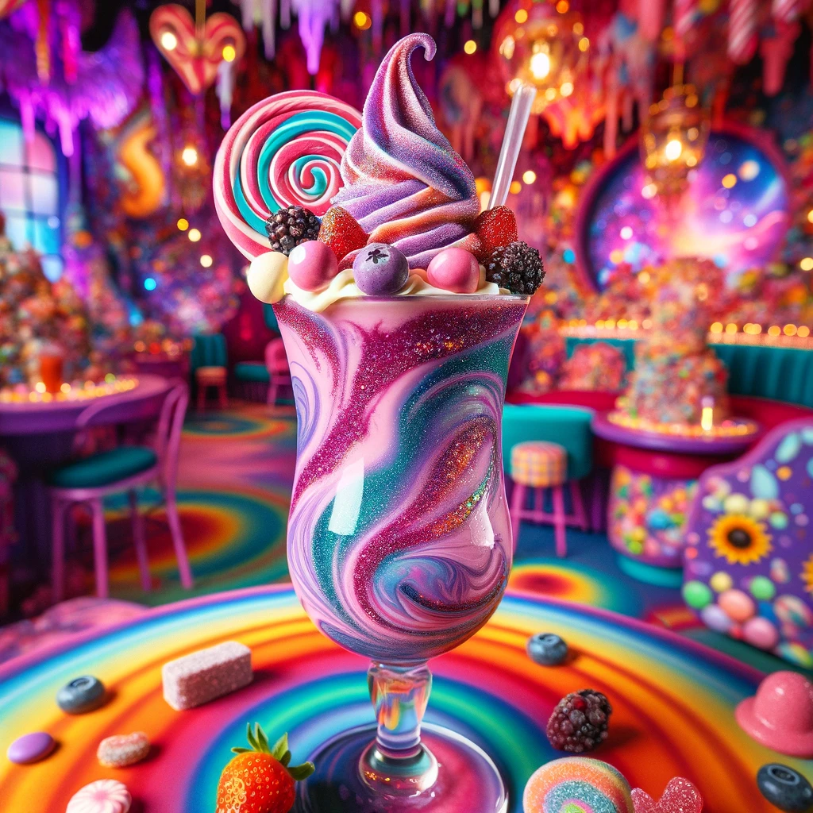

Back to home
Villy Vonka's Everlasting Gobstopper Smoothie

Description
Dive into a world of pure imagination with Villy Vonka's Everlasting Gobstopper Smoothie. A magical blend of berries, vanilla ice cream, and a swirl of edible glitter, this vibrant purple and pink smoothie is a treat for both the eyes and the taste buds. It's whimsically delightful, just like a trip through the most fantastical candy factory.
Ingredients
Serves one
- A handful of assorted berries
- 1 cup vanilla ice cream
- 120ml milk (or half a cup for the Americans...)
- Edible glitter (for that magical touch)
- A spoonful of unrealistic expectations
Steps
- Blend berries, ice cream, and milk until smooth.
- Stir in edible glitter and dreams.
- Serve in a whimsical glass and enjoy until you turn into a blueberry.